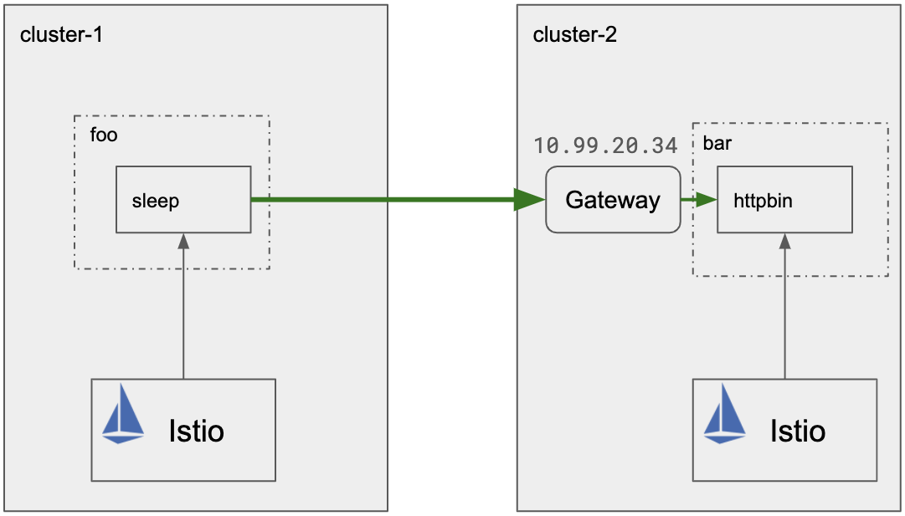

Istio multiclusters
Configurating an Istio mesh spanning multiple Kubernetes clusters.
There are two control plane variants:
-
Replicated control planes - Install an Istio mesh across multiple Kubernetes clusters with replicated control plane instances.
-
Shared control plane (single and multiple networks) - Install an Istio mesh across multiple Kubernetes clusters with a shared control plane.
Replicated control planes
Follow instructions below to configure minikube playground with two clusters.
Info
Below commands works on macOS system
Configure minikube clusters
Install minikube:
brew install minikube
Clear all minikube clusters:
minikube delete --all
Create two minikube docker driven clusters:
minikube start --driver virtualbox -p cluster-1
minikube start --driver virtualbox -p cluster-2
Check clusters:
kubectl config get-contexts
Change cluster:
minikube profile cluster-1
Download istio with service example:
curl -L https://istio.io/downloadIstio | ISTIO_VERSION=1.5.4 sh -
cd istio-1.5.4
export PATH=$PWD/bin:$PATH
echo $PATH
Save clusters names to variables:
export CTX_CLUSTER1=$(kubectl config view -o jsonpath='{.contexts[0].name}')
export CTX_CLUSTER2=$(kubectl config view -o jsonpath='{.contexts[1].name}')
echo CTX_CLUSTER1 = ${CTX_CLUSTER1}, CTX_CLUSTER2 = ${CTX_CLUSTER2}
Warning
Be sure your path is set export PATH=$PWD/bin:$PATH
Install istio in each cluster
Create istio namespace:
kubectl create --context=$CTX_CLUSTER1 namespace istio-system
kubectl create --context=$CTX_CLUSTER2 namespace istio-system
Configure CA:
kubectl create --context=$CTX_CLUSTER1 secret generic cacerts -n istio-system \
--from-file=samples/certs/ca-cert.pem \
--from-file=samples/certs/ca-key.pem \
--from-file=samples/certs/root-cert.pem \
--from-file=samples/certs/cert-chain.pem
kubectl create --context=$CTX_CLUSTER2 secret generic cacerts -n istio-system \
--from-file=samples/certs/ca-cert.pem \
--from-file=samples/certs/ca-key.pem \
--from-file=samples/certs/root-cert.pem \
--from-file=samples/certs/cert-chain.pem
Install istio:
istioctl manifest --context=$CTX_CLUSTER1 apply \
-f install/kubernetes/operator/examples/multicluster/values-istio-multicluster-gateways.yaml
istioctl manifest --context=$CTX_CLUSTER2 apply \
-f install/kubernetes/operator/examples/multicluster/values-istio-multicluster-gateways.yaml
Setup example services
Deploy sleep service on first cluster:
kubectl create --context=$CTX_CLUSTER1 namespace foo
kubectl label --context=$CTX_CLUSTER1 namespace foo istio-injection=enabled
kubectl apply --context=$CTX_CLUSTER1 -n foo -f samples/sleep/sleep.yaml
export SLEEP_POD=$(kubectl get --context=$CTX_CLUSTER1 -n foo pod -l app=sleep -o jsonpath={.items..metadata.name})
kubectl get services --namespace foo --context $CTX_CLUSTER1
Deploy the httpbin service in second cluster:
kubectl create --context=$CTX_CLUSTER2 namespace bar
kubectl label --context=$CTX_CLUSTER2 namespace bar istio-injection=enabled
kubectl apply --context=$CTX_CLUSTER2 -n bar -f samples/httpbin/httpbin.yaml
kubectl get services --namespace bar --context $CTX_CLUSTER2
Show services:
echo -e "\n $CTX_CLUSTER1 services:"
kubectl get services --namespace foo --context $CTX_CLUSTER1
echo -e "\n $CTX_CLUSTER2 services:"
kubectl get services --namespace bar --context $CTX_CLUSTER2
echo -e "\n"
Check if load balancer is enabled:
kubectl get svc istio-ingressgateway -n istio-system
If not (<pending> state in external ip) run in new terminal:
minikube profile $CTX_CLUSTER2
minikube tunnel
External IP should be visible (external ip should not be in <pending> state)
Now, get second cluster gateway address:
export CLUSTER2_GW_ADDR=$(kubectl get --context=$CTX_CLUSTER2 svc --selector=app=istio-ingressgateway \
-n istio-system -o jsonpath='{.items[0].status.loadBalancer.ingress[0].ip}')
echo -e "\nIP: $CLUSTER2_GW_ADDR"
Configure Gateway
Cluster-2 gateway configuration:
kubectl apply --context=$CTX_CLUSTER2 -f - <<EOF
apiVersion: networking.istio.io/v1alpha3
kind: Gateway
metadata:
name: httpbin-gateway
spec:
selector:
istio: ingressgateway
servers:
- port:
number: 80
name: http
protocol: HTTP
hosts:
- "httpbin.example.com"
EOF
Virtual service configuration:
kubectl apply --context=$CTX_CLUSTER2 -f - <<EOF
apiVersion: networking.istio.io/v1alpha3
kind: VirtualService
metadata:
name: httpbin
spec:
hosts:
- "httpbin.example.com"
gateways:
- httpbin-gateway
http:
- match:
- uri:
prefix: /status
- uri:
prefix: /delay
route:
- destination:
port:
number: 8000
host: httpbin.bar.svc.cluster.local
EOF
Check communication from one cluster to another:

kubectl exec --context=$CTX_CLUSTER1 $SLEEP_POD -n foo -c sleep -- curl -I -H 'Host:httpbin.example.com' $CLUSTER2_GW_ADDR:80/status/200
It should return HTTP 200 ok status